来源：https://aiawaken.feishu.cn/docx/KnIddyK9jowzHdxqW2JcgfSqnoe
hi，我是周知，最近翻看最新的 AI 研究报告，
Anthropic 官方给了个出人意料的答案：
在 AI 代理（Agents）开发中，
"化繁为简"（less is more）才是制胜法则。
过去一年他们发现，
真正成功的 AI 代理往往采用简单、模块化的设计，
而不是复杂的架构。
也许，技术的演进有时就是个悖论。
越是追求复杂，反而越容易迷失：。
全文的本质思考如下：
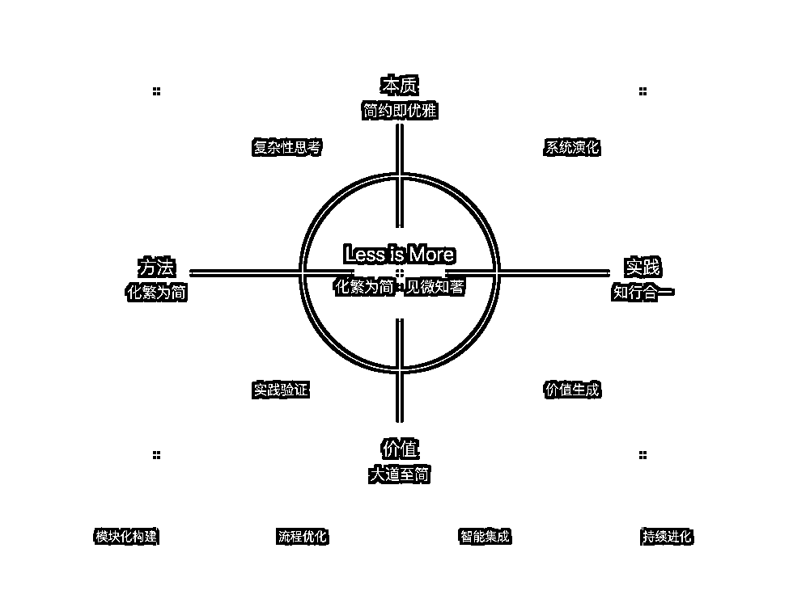
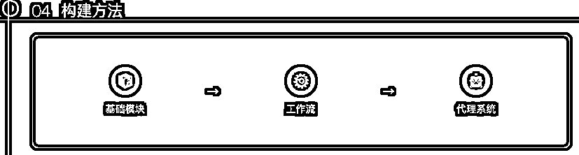
以下，是我和 AI 协作后的进一步解读。
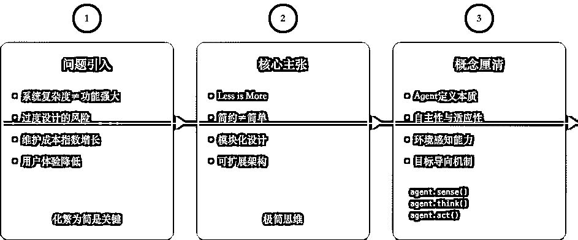
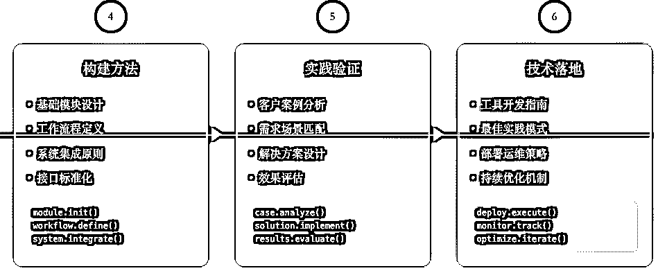
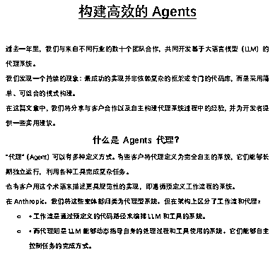
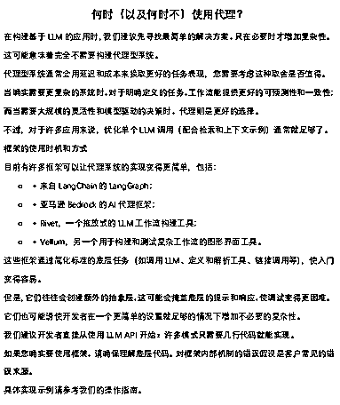
复杂方案：
结果：
简单方案：
结果：
复杂做法：
买个高级乐高机器人套装：
说明书 100 页
零件上千个
改动一处可能全乱
简单做法：
直接用乐高搭个小房子：
几块基础积木
一个简单设计
随时可以修改
这就是 Anthropic 想告诉我们的：
在使用 AI 时，不要把事情搞得太复杂。
简单理解：
就像你给 AI 配了个
会自动执行任务的"助手"
比如：
自动回复邮件｜整理文档｜写代码
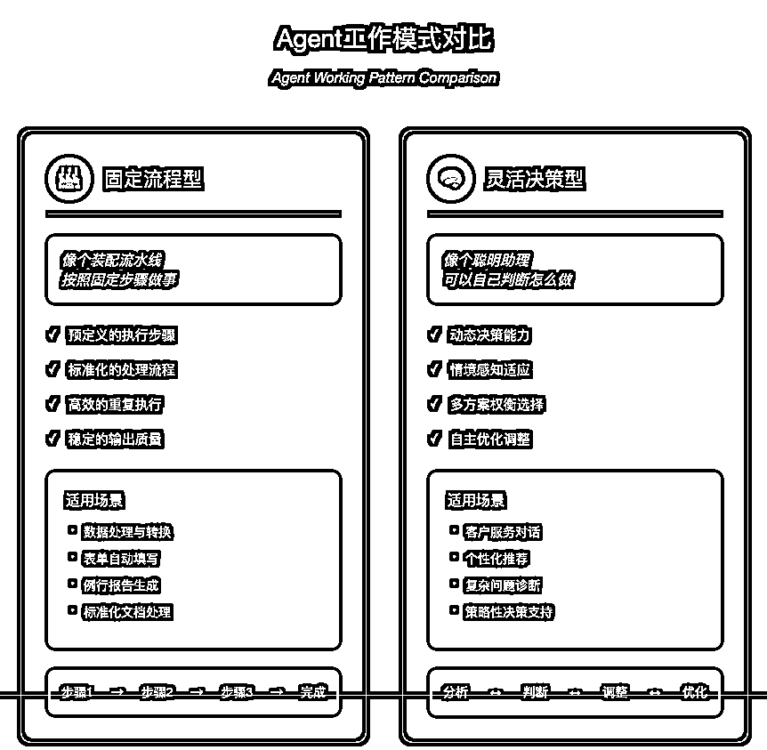
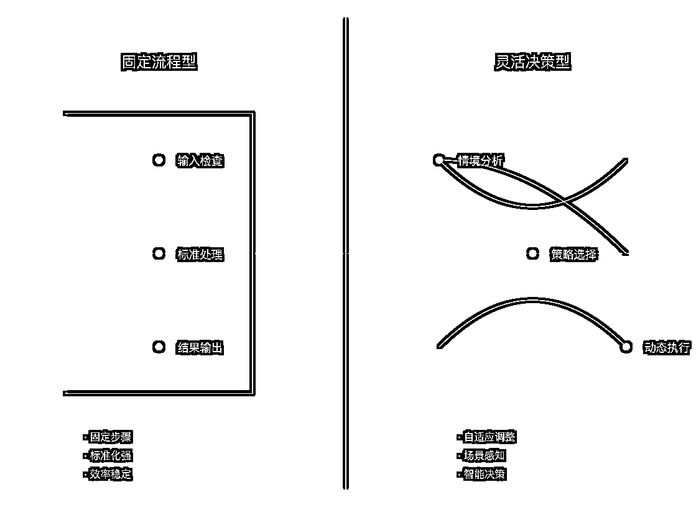
先问问自己：
真的需要那么复杂吗？
很多时候：
一个好的提示词
加上简单的指令
就够用了！
你不需要懂编程 就像用微信， 不需要懂代码一样
先学会写好提示词 这是最重要的基础
- 先掌握基础对话 - 再学习任务设计 - 最后尝试流程优化
1. 专注提示词质量 而不是复杂技术 2. 理解基础概念 不用钻研技术细节 3. 多做实际尝试 从实践中学习
不要这样： "我要用最新的Agent框架 来实现自动化办公" 而是这样： "让我先把基础对话学好， 写出清晰的提示词， 一步步提升效果"
简单 > 复杂 实用 > 完美 循序渐进 > 一步到位
对你来说：
不用纠结技术细节
专注于：
如何提出好问题
如何设计好对话
如何得到好结果
不是技术越复杂越好
而是越简单越实用
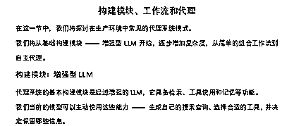
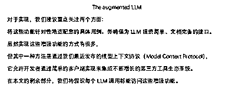
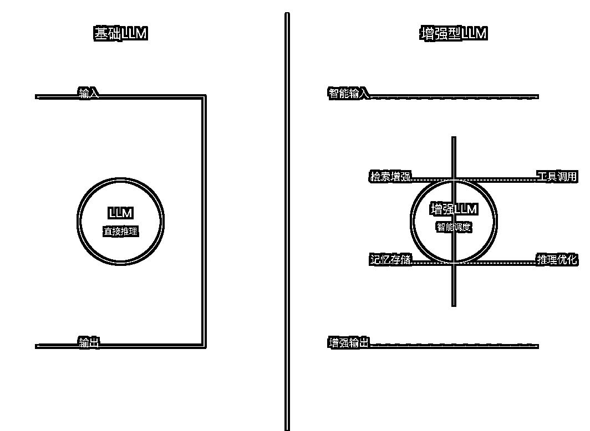
想象你在培养一个超级助手：
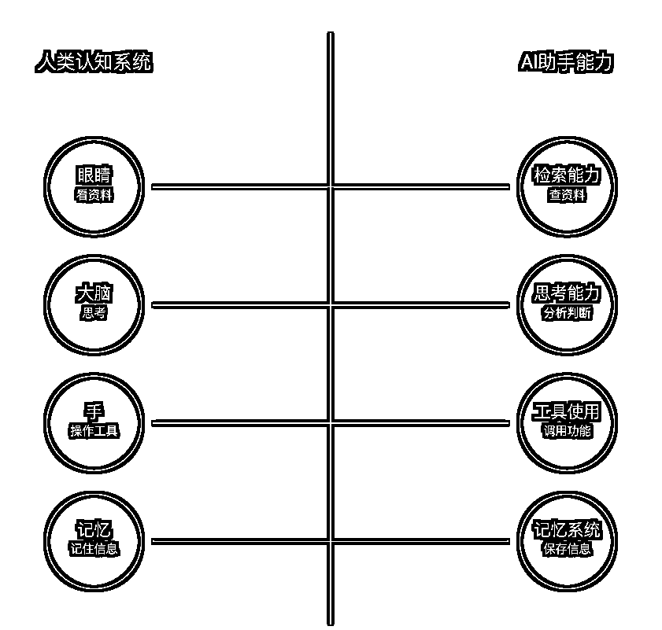
就像人类需要： - 眼睛(看资料) - 大脑(思考) - 手(操作工具) - 记忆(记住重要信息) AI助手也需要： - 检索能力(查资料) - 思考能力(分析判断) - 工具使用(调用功能) - 记忆系统(保存信息)
就像训练一个聪明的实习生：
1. 主动学习 - 知道该查什么 - 会用对的工具 - 记住重要内容 2. 独立判断 - 不用事事请示 - 懂得灵活处理 - 记录关键信息
对你这样的普通用户来说：
不用关心技术细节 只需要知道： 1. 目的很简单 让AI更懂你的需求 2. 方法很直接 给AI合适的工具 3. 效果很实用 AI能自主完成任务
普通的 AI：
你："帮我查下最近的AI新闻" AI："抱歉，我不能上网查询"
增强型 AI：
你："帮我查下最近的AI新闻" AI： - 自动搜索新闻 - 总结重要内容 - 保存关键信息 - 使用合适工具
对你来说最重要的是：
1. 清楚表达需求 告诉AI你要什么 2. 了解AI能力 知道它能做什么 3. 合理安排任务 不要期待太复杂
就像给 AI 装备：
基础版： 只会简单对话 增强版： - 会查资料 - 会用工具 - 会记笔记 - 会主动思考
作为 AI 爱好者使用建议：
先熟悉基础功能，了解 AI 能做什么。
从小任务开始，逐步增加难度。
多做实际测试，积累使用经验。
不是让 AI 变得多复杂
而是让它更懂你的需求
更好地解决问题
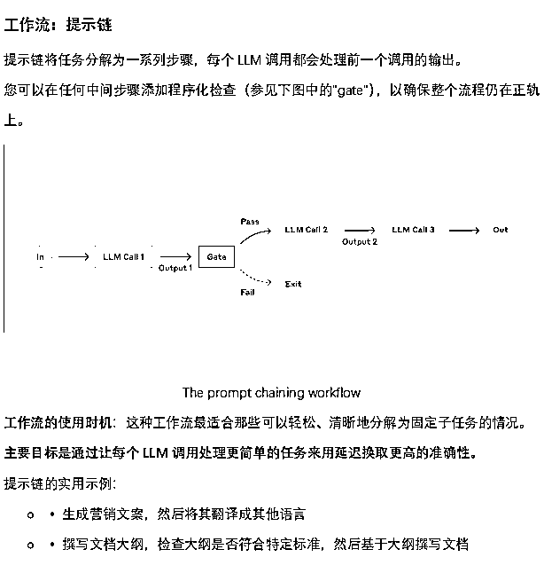
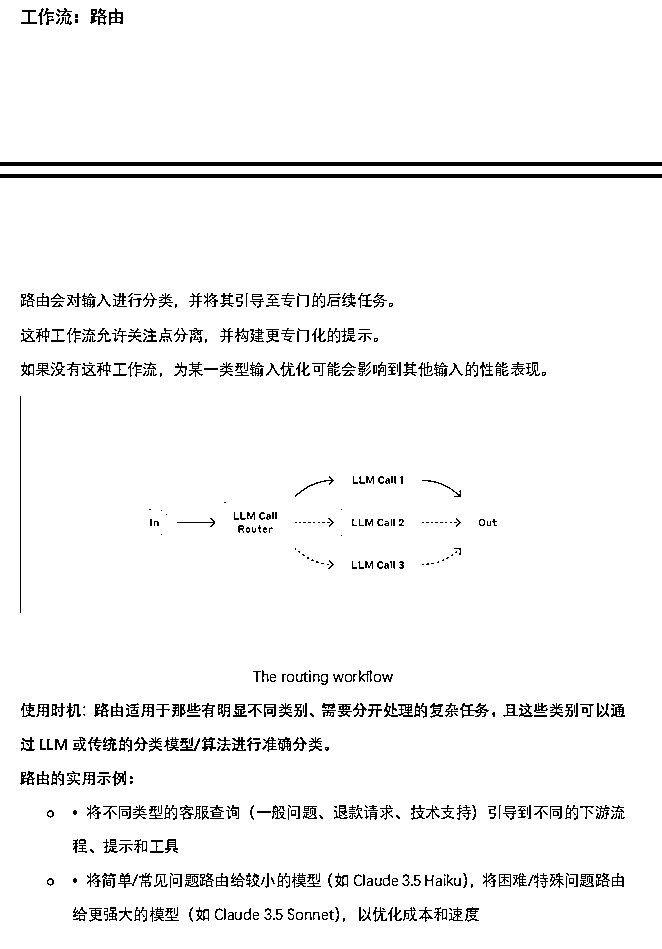
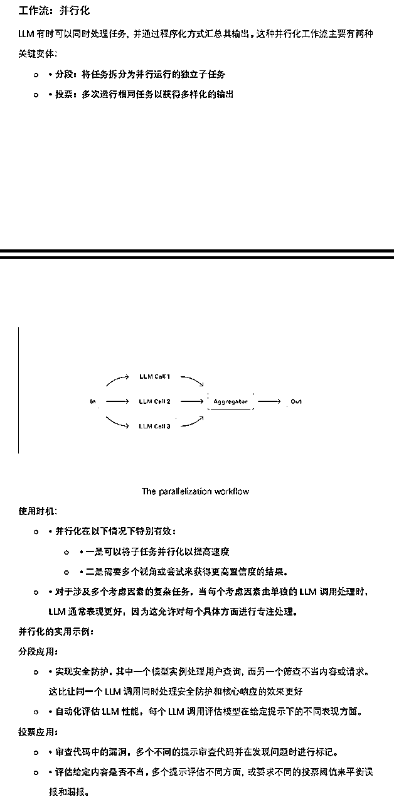
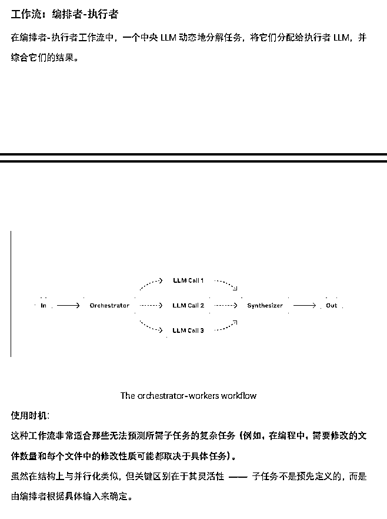
想象你在管理一个智能办公室，有不同类型的 AI 助手：
就像接力跑：
例子：写营销文案 第一棒：写中文初稿 第二棒：检查质量 第三棒：翻译成英文
适用场景：
- 任务步骤明确 - 每步都要检查 - 需要高准确度
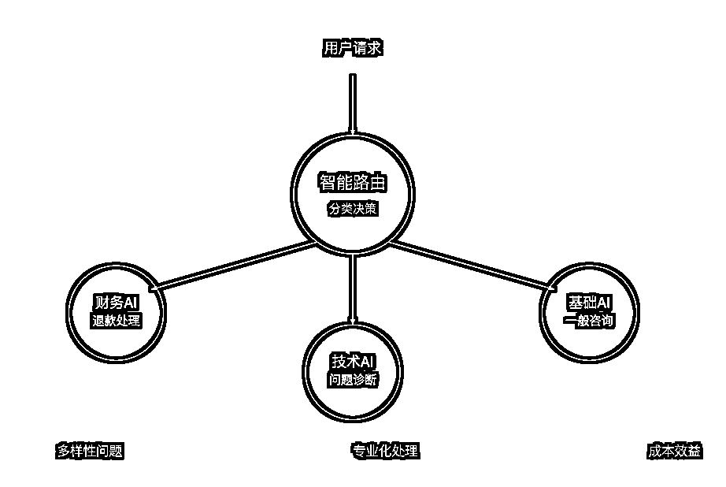
像个智能前台：
例子：客服系统 - 退款问题→财务AI - 技术问题→技术AI - 普通咨询→基础AI
适用场景：
- 问题类型多样 - 需要专业处理 - 要控制成本
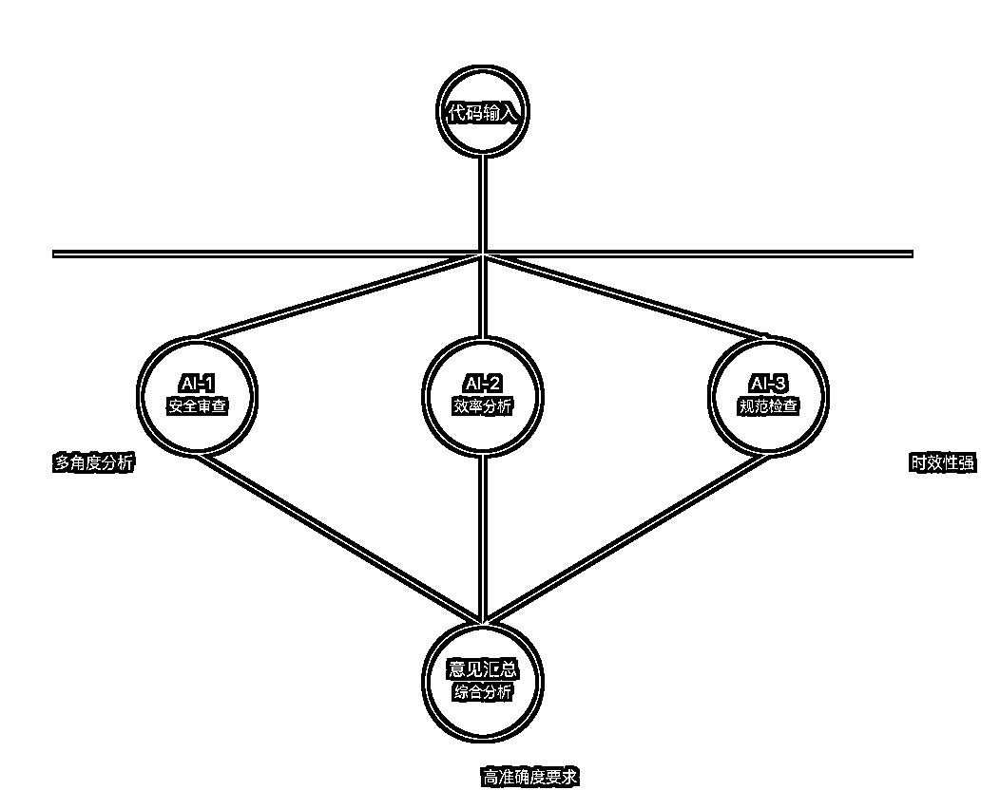
像开会讨论：
例子：代码审查 - AI-1检查安全性 - AI-2检查效率 - AI-3检查规范 最后汇总意见
适用场景：
- 需要多角度看问题 - 时间很紧急 - 要求高准确度
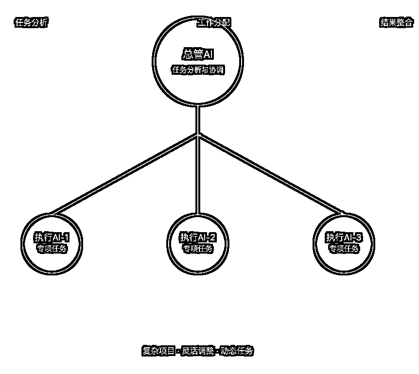
像项目经理带团队：
例子：编程项目 总管AI： - 分析整体任务 - 分配具体工作 - 整合所有结果 执行AI： - 专注单个任务 - 报告完成情况
适用场景：
- 复杂项目 - 需要灵活调整 - 任务不固定
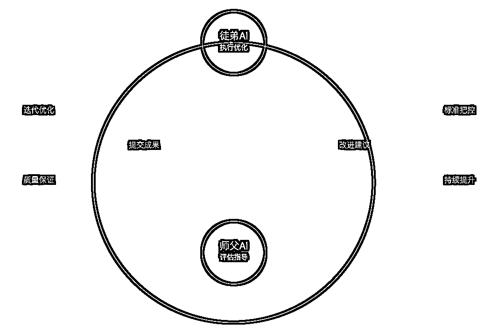
像师徒配合：
例子：写文章 徒弟AI：写初稿 师父AI：提供修改建议 徒弟AI：改进完善 循环直到满意
适用场景：
- 需要高质量 - 可以反复优化 - 有明确标准
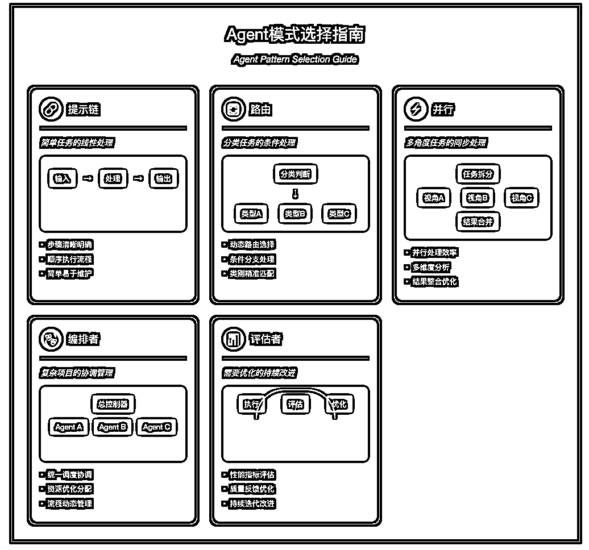
简单任务：用提示链 分类任务：用路由 多角度任务：用并行 复杂项目：用编排者 需要优化：用评估者
- 从简单开始 - 逐步加复杂度 - 多测试效果
- 不是越复杂越好 - 要符合实际需求 - 考虑成本效益
基础应用：
写文章：提示链 客服：路由分配 代码审查：并行 大项目：编排者 内容优化：评估者
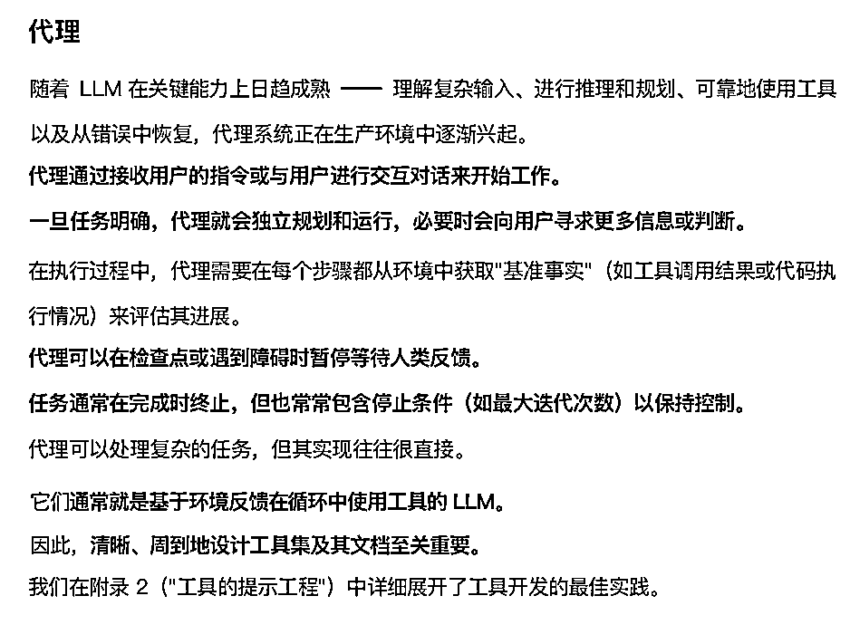
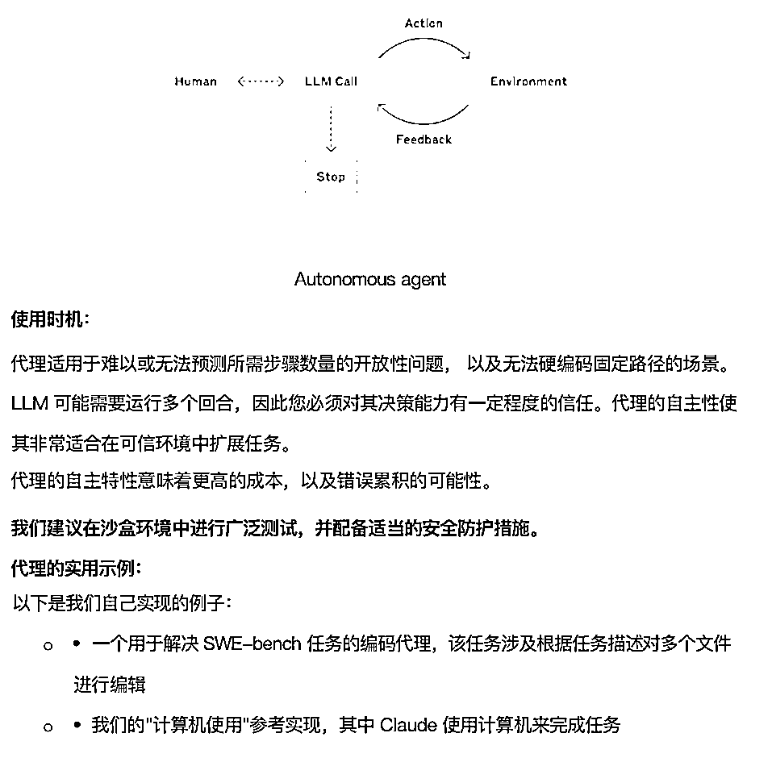
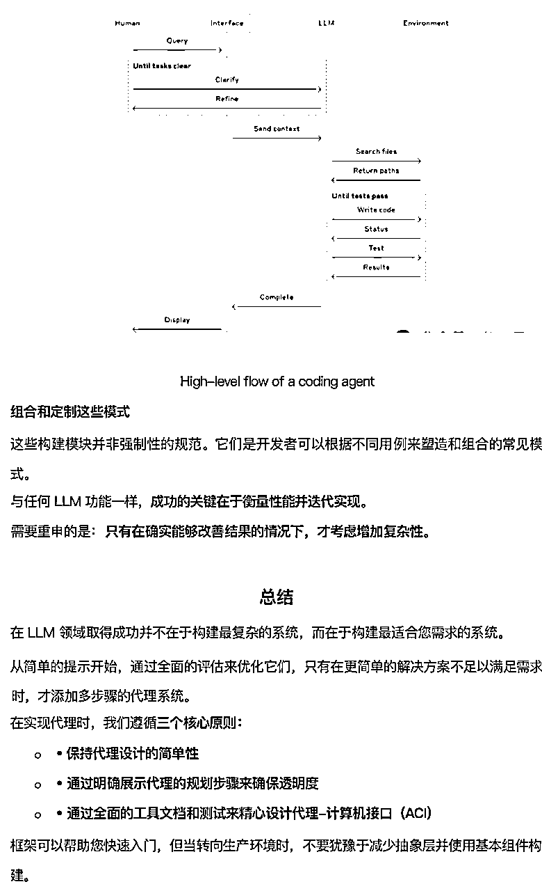
想象一个超级智能助理
就像一个独立员工： 1. 接收任务 2. 自主规划 3. 独立执行 4. 遇到问题会请示 5. 完成后汇报
普通AI： 像个听命令的机器人 按固定步骤执行 代理AI： 像个聪明的助手 - 会思考怎么做 - 会使用工具 - 会请教问题 - 会调整方案
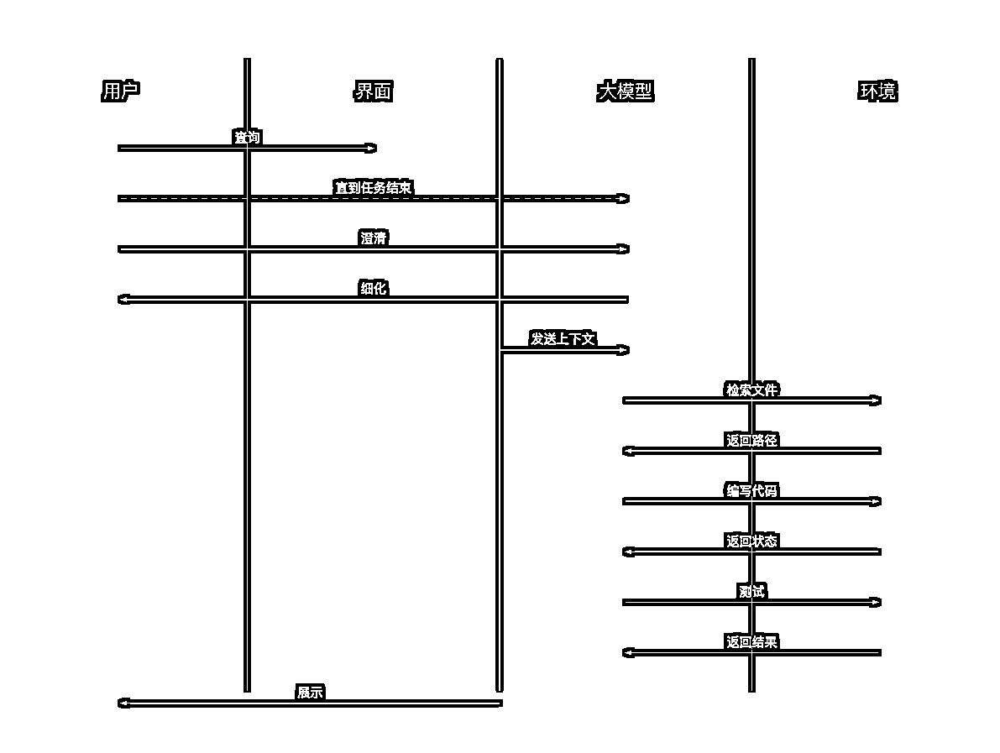
编程助手：
任务：修改代码bug 工作过程： 1. 分析问题 2. 查看相关文件 3. 设计解决方案 4. 测试修改效果 5. 如有问题就调整
自主性
- 自己做决定 - 自己找工具 - 自己解决问题
智能反馈
- 知道什么时候该问人 - 了解自己能力边界 - 会总结经验教训
安全控制
- 有最大执行次数 - 重要决定需确认 - 可随时暂停
最适合：
- 开放性问题 - 步骤不固定 - 需要灵活应对
不适合：
- 高风险任务 - 零容错要求 - 严格时间限制
对 AI 爱好者：
1. 先在安全环境测试 比如：模拟环境 2. 从小任务开始 比如：简单文件整理 3. 渐进式增加难度 比如：逐步加复杂任务
成本考虑
- 运行时间长 - 资源消耗大 - 需要权衡收益
错误处理
- 可能累积错误 - 需要及时纠正 - 要有备用方案
简单任务：
- 文件整理 - 信息汇总 - 基础数据分析
复杂任务：
- 代码开发 - 项目管理 - 研究分析
最重要的是记住：
Less is More
不是所有任务，都需要用代理系统。
有时候简单的 AI，反而更合适。
有时候简单的方案，反而是最优解。
就像插座不需要智能， 电灯不必联网。
过度设计， 反而背离了初心。
简单，也是一种智慧。
实用，才是使用初心。